4.12 Quantitative analysis of molecular surface¶
Multiwfn manual, p.694–730. Images:
../imgs/.
alid range:
RGB (0-1): 1.000000 0.953110 0.026876
RGB (0-255): 255 243 7
RGB of complementary color: 0 12 248
RGB of original color (maximum brightness): 255 243 7
RGB of complementary color (maximum brightness): 7 19 255
4.11.14.2 Predicting color of allura red based on experimental UV-Vis
spectrum
examples\spectra\Allura_red_UV-Vis.txt is X-Y curve data of experimental UV-Vis spectrum of a famous dye, allura red. In this example we predict color of allura red based on this spectrum.
Boot up Multiwfn and load examples\spectra\Allura_red_UV-Vis.txt, then input
Multiwfn session
- 11 — Plotting spectrum
- 0 — Predicting color based on UV-Vis spectrum recorded in text file Now you can see the following map on screen
From the color shown at bottom lower side, it can be seen that the color of allura red is red, this is exactly the actually observed color of this substance. This map also indicates that allura red absorb light of cyan color.
4.12 Quantitative analysis of molecular surface¶
4.12.1 Electrostatic potential analysis on phenol molecular surface¶
Below I will introduce quantitative analysis of molecular surface by case study of phenol. The theoretical basis has been documented in Section 3.15.1 and thus will not be repeated here. In this section we only analyze electrostatic potential (ESP) on phenol vdW surface, in next section we will then analyze average local ionization energy on the phenol surface.
Boot up Multiwfn and input following commands examples\phenol_631Gxx.wfn // Phenol wavefunction produced at B3PW91/6-31G** level. For most systems this level can give acceptable result of ESP analysis. For better accuracy, def-TZVP is recommended, while more expensive def2-TZVP basis set is able to give ideal result
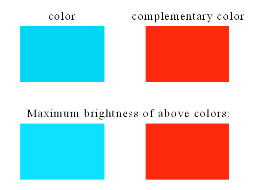
Multiwfn session
- 12 — Quantitative analysis of molecular surface
- 0 — Start the analysis under default settings. By default, the mapped function is ESP Now the calculation starts. Since computing ESP is time consuming, you need to wait for a while. During the calculation some intermediate information is printed, most users do not need to concern about them. Below results will be printed on screen once the calculation has been finally finished:
Global surface minimum: -0.041203 a.u. at 1.455097 3.343708 -0.007902 Ang.
Global surface maximum: 0.085761 a.u. at -1.936645 3.093464 0.021360 Ang.
Number of surface minima: 3
# a.u. eV kcal/mol X/Y/Z coordinate(Angstrom)
1 -0.03046066 -0.828877 -19.112843 0.150202 -1.011077 -1.882004
2 -0.03045989 -0.828856 -19.112362 0.192185 -0.985412 1.877656
* 3 -0.04120321 -1.121196 -25.853368 1.455097 3.343708 -0.007902
Number of surface maxima: 5
# a.u. eV kcal/mol X/Y/Z coordinate(Angstrom)
1 0.02275520 0.619200 14.277975 -3.344441 -2.281045 0.047286
* 2 0.08576096 2.333674 53.811572 -1.936645 3.093464 0.021360
3 0.01935782 0.526753 12.146259 0.066223 -4.286661 0.040555
4 0.01980285 0.538863 12.425498 3.340574 -2.325727 0.021485
5 0.01583741 0.430958 9.937340 3.419218 1.225375 -0.019326
================= Summary of surface analysis =================
Volume: 835.71041 Bohr^3 ( 123.83953 Angstrom^3)
Overall surface area: 476.05682 Bohr^2 ( 133.30951 Angstrom^2)
Positive surface area: 231.09186 Bohr^2 ( 64.71232 Angstrom^2)
Negative surface area: 244.96497 Bohr^2 ( 68.59719 Angstrom^2)
Overall average value: -0.00020233 a.u. ( -0.12695332 kcal/mol)
Positive average value: 0.01877643 a.u. ( 11.78145591 kcal/mol)
Negative average value: -0.01810626 a.u. ( -11.36095315 kcal/mol)
Overall variance (sigma^2_tot): 0.00041488 a.u.^2 ( 163.34165024 (kcal/mol)^2)
Positive variance: 0.00031106 a.u.^2 ( 122.46642148 (kcal/mol)^2)
Negative variance: 0.00010382 a.u.^2 ( 40.87522876 (kcal/mol)^2)
Balance of charges (nu): 0.18762182
Product of sigma^2_tot and nu: 0.00007784 a.u.^2 ( 30.6464578 (kcal/mol)^2)
Internal charge separation (Pi): 0.01842642 a.u. ( 11.56183883 kcal/mol)
Molecular polarity index (MPI): 0.50154872 eV ( 11.56600 kcal/mol)
Nonpolar surface area (|ESP| <= 10 kcal/mol): 67.26 Angstrom^2 ( 50.45 %)
Polar surface area (|ESP| > 10 kcal/mol): 66.05 Angstrom^2 ( 49.55 %)
Above information contains various quantities relevant to ESP, see Section 3.15.1 for their meanings and definitions. Now select option 0 in the post-processing interface to view molecular structure and surface extrema (red and blue spheres correspond to maxima and minima, respectively):
In side view:
Minimum 3 (-25.85 kcal/mol) is global minimum on the surface, its large negative value is owing to the lone pair of oxygen. Maximum 2 (53.81 kcal/mol) is global maximum arising from the positively charged H13, the ESP at this point is much larger than that at other maxima (where the ESP ranges from 10 to 15 kcal/mol). This is because of the presence of oxygen, which attracted a great deal of electrons from H13. In complex, assuming that only electrostatic interaction exists, monomers always contact each other in maximally ESP complementary manner. So, we can expect that in phenol dimer, H13 and maximum 2 in a monomer, and O12 and minimum 3 in neighbouring monomer will be in a straight line (resulting hydrogen bonding), this is the exact situation in actual geometry of phenol dimer, see the graph below. Notice that in the dimer, maximum 2 and minimum 3 shown above have cancelled each other out.
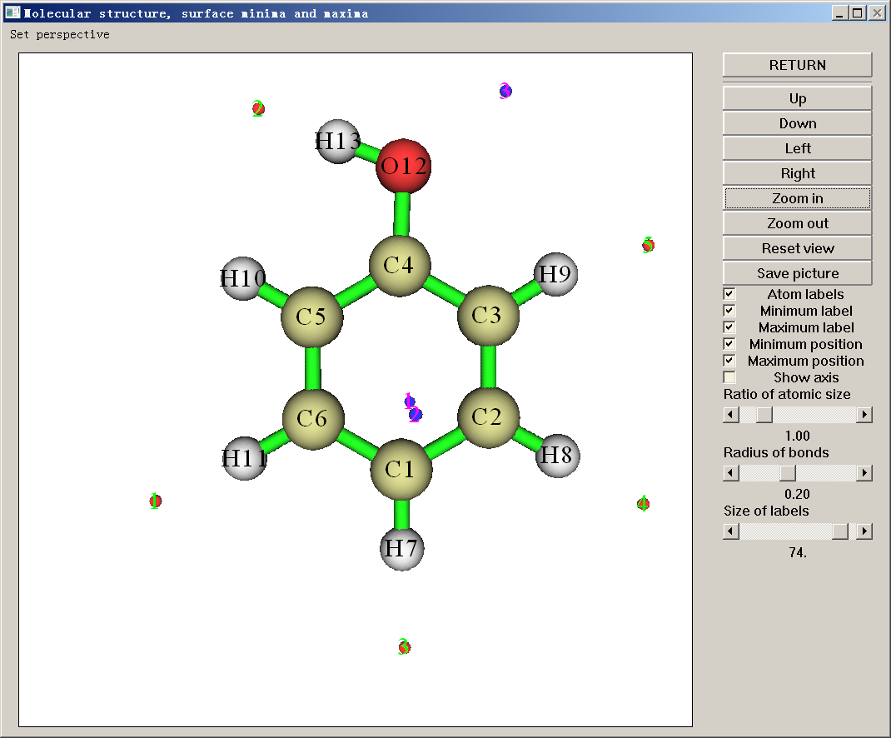
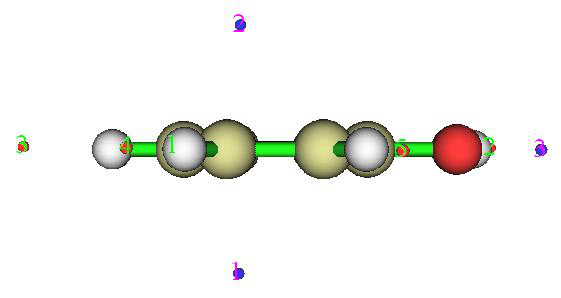
Minimum 1 and 2 (both are -19.11 kcal/mol) are local minimum on the surface, mainly arise from the abundant π electrons above and below the ring. It is well known that electrophiles always prefer to attack the atom which has very low ESP around it, so C1 should be an ideal reaction site for electrophilic reaction. This conclusion is partially consistent with the general knowledge that hydroxyl is an ortho-para directing group. However, although the global minimum is closest to O12, O12 is not the electrophilic reaction site; this contradiction reveals the inherent limitation of ESP analysis method.
Note 1: Since the molecule has Cs symmetry, in principle, minimum 1 and 2 should have identical X and Y coordinates. However, this cannot be exactly fulfilled in numerical process, because the points scattered on the molecular surface do not have the molecular symmetry, see Section 3.15.1 for detail. So, X and Y coordinates of minimum 1 and 2 are slightly deviated to each other. If you want to refine the result, choose option 3 "Spacing of grid data for generating molecular surface" and input a smaller value than default value. Smaller spacing of grid points yields a more accurate result, but bring higher computational burden.
Note 2: Due to limitation of the Multiwfn GUI, sometimes it is difficult to query the index of the ESP extrema of interest, in this case using VMD instead is recommended, see Part 6 of this video https://youtu.be/QFpDf_GimA0.
Note 3: It is also possible to draw ESP extrema on contour line(s) of a specific isovalue in a plane map, see Section 4.4.12.
Mutual penetration distance The non-bonded radius defined in the framework of atoms in molecule (AIM) theory is the shortest distance between a nucleus and ρ=0.001 a.u. isosurface. Let us calculate the non-bonded radius for O12 and H13. Select option 10 in the post-processing interface and input 12, we can see that the non-bonded radius of O12 is 1.701 Å. Select 10 and input 13, the non-bonded radius of H13 is 1.172 Å. In the phenol dimer, the H---O of the H-bond is 1.937 Å, therefore the so-called mutual penetration distance is 1.701+1.172-1.937=0.936 Å. This is a nontrivial value, indicating the H-bond is strong.
ESP statistical distribution on molecular surface As the final part of ESP analysis, we examine the molecular surface area in each ESP range, this is useful to quantitatively discuss ESP distribution on the whole molecular surface. We choose option 9 in the post-processing interface, and then input:
all // All atoms are taken into the statistics (alternatively, if you input for example 2-4, then only the local surfaces corresponding to atom 2, 3 and 4 will be taken into account, see Section 4.12.3 for illustration of the concept of local molecular surface)
-30,55 // The ESP range you are interested in. Since we have already known that the minimum and the maximum ESP on the surface are -25.85 and 53.81 kcal/mol respectively, here we input a slightly larger range to enclose them
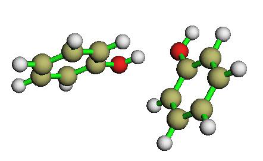
Multiwfn session
- 15 — The number of intervals
- 3 — Both the inputted and outputted units are in kcal/mol Then you will see surface area (in Å2) and corresponding percentage in the whole surface area in each successive ESP range.
Begin End Center Area %
-30.0000 -24.3333 -27.1667 1.8192 1.3647
-24.3333 -18.6667 -21.5000 6.0284 4.5221
-18.6667 -13.0000 -15.8333 20.9732 15.7327
-13.0000 -7.3333 -10.1667 19.0390 14.2818
...
43.6667 49.3333 46.5000 1.2690 0.9519
49.3333 55.0000 52.1667 1.0457 0.7844
Sum: 133.3095 100.0000
By using this data, you can use your favourite program to draw a histogram graph. For example, we choose "center" column as X-axis and "Area" column as Y-axis to plot the graph below
28
24
20
Surface area (Å2) 16 12 8
4
-30-20-10010203040500
Electrostatic potential (kcal/mol)
From the graph it can be seen that there is a large portion of molecular surface having small ESP value, namely from -20 to 20 kcal/mol. Among these areas, the negative part mainly corresponds to the surface above and below the six-membered ring and shows the effect of the abundant π-electron cloud; the positive part mainly arises from the positive charged C-H hydrogens; the near-neutral part represents the border area between the negative and positive parts. There are also small areas having remarkable positive and negative ESP value, corresponding to the regions close to the global ESP minimum and maximum, respectively.
Plotting ESP colored molecular surface With the help of VMD program, one can plot very nice color-filled molecular surface maps with surface extrema for various real space functions based on the output of Multiwfn. Below is such a plot for ESP, which was presented in my study of benzoapyrene diol epoxide, see Struct. Chem., 25, 1521 (2014). In which blue, white and red correspond to ESP varying from -30 to 35
kcal/mol, the green and orange spheres correspond to ESP surface minima and maxima, respectively
If you would like to plot similar graphs, please download and follow this tutorial: http://sobereva.com/multiwfn/res/plotESPsurf.pdf. However, there are many steps in this tutorial, if you want to draw a map with similar or even better effect but in a much simpler way, see Section 4.A.13 or this video tutorial: https://youtu.be/QFpDf_GimA0. This section and video also illustrate how to plot a penetration map of van der Waals surface of different molecules, which is useful for discussing intermolecular interactions.
Hint: Calculation speed of ESP by cubegen utility in Gaussian package is notably faster than Multiwfn if number of your CPU cores is very limited (less than 10 cores). If you have Gaussian installed on your machine and input file is .fch/fchk format, it is suggested to set "cubegenpath" parameter in settings.ini file to actual path of cubegen, so that cubegen could be automatically invoked by Multiwfn to evaluate ESP during the analysis. Please check Section 5.7 for detail.
If you are an ORCA user and meantime unable to access Gaussian, you can make use of "orca_vpot" utility in ORCA package to try to reduce cost of ESP analysis on molecular surface when number of CPU cores is very limited, see http://sobereva.com/wfnbbs/viewtopic.php?pid=937 for detail.
FAQ: Why some surface ESP minima (maxima) have positive (negative) value? Some Multiwfn users asked me why they observed that some surface ESP minima (maxima) have positive (negative) value. In fact, this phenomenon is very common and it is never a problem or bug. Mathematically, a minimum (maximum) refers to a point where its value is lower (higher) than surrounding points, clearly it never implies that this point must have negative (positive) value. If you are still confused, see below illustration
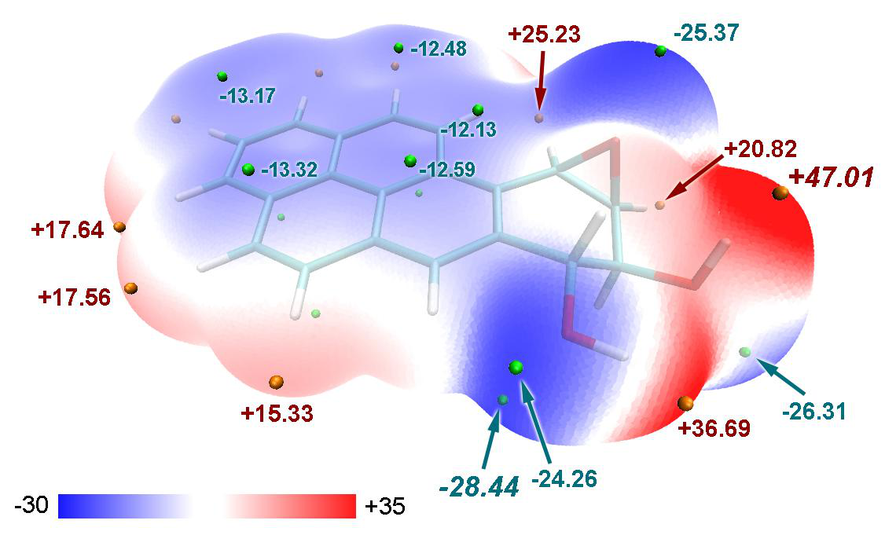
For neutral system, commonly surface ESP minima (maxima) having positive (negative) are not chemically significant, you can simply ignore them in the discussion. If you want to remove these insignificant minima (maxima), you can choose option 3 (4) in post-processing menu, and then input d. Then you will find these unwanted extrema have disappeared.
It is also worth noting that for a cation (anion) system, commonly all surface extrema have positive (negative) value, because the overall value of surface ESP extrema is always greatly dominated by the net charge carried by the system.
Trick: Reuse data of mapped function generated during previous analysis Here I introduce a trick. Maybe you have noticed that evaluation of ESP on vdW surface is time-consuming, especially for large system with high-quality basis set. If you have performed ESP analysis on a system, which will be analyzed again later, in fact you can export the ESP data to a plain text file, so that next time when you analyze the same system you can directly make use of the exported data. For other types of mapped functions, this trick also works.
Let us see an example. We first perform ESP analysis on vdW surface as usual, input below commands:
Multiwfn session
- examples\N-phenylpyrrole.fch 12 — Quantitative molecular surface analysis
- 0 — Start the analysis Once the calculation is finished, select option 7 to export the surface vertices with ESP values to a plain text file named vtx.txt in current folder. After that select -1 to return to last menu.
Assume that we want to perform the analysis again. This time we can directly use the ESP data recorded in the plain text file. Input below commands
Multiwfn session
- 5 — Loading mapped function values from external file during analysis
- 1 — Loading mapped function at all surface vertices from a plain text file
- 0 — Start the analysis Once construction of molecular surface is complete, Multiwfn will prompt you to input the path of the plain text file recording mapped function values at all surface vertices, at this point you should simply input vtx.txt.
Since this time the mapped function values, namely ESP values, are not calculated but loaded from vtx.txt directly, the analysis results immediately show up on the screen.
Trick: Perform ESP analysis on molecular surface solely based on cube files Some quantum chemistry and first-principles programs, such as Quantum ESPRESSO, ADF,
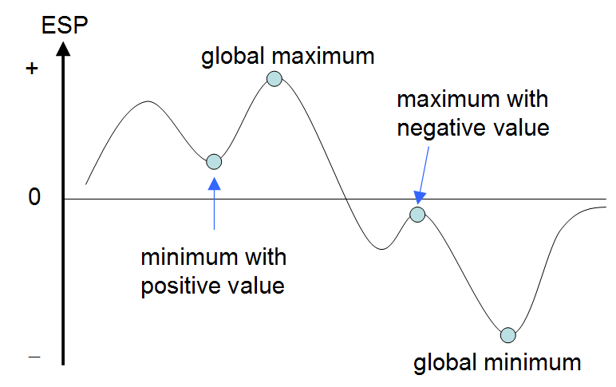
Dmol3 and FHI-aims, are unable to produce a wavefunction file that supported by Multiwfn, however in this case it is still possible to perform ESP analysis over molecular surface, as long as you can yield cube files of electron density and ESP for your system by these codes. Once the cube files are generated, you can input below commands after booting up Multiwfn:
Multiwfn session
- density.cub — Load cube file of electron density first
- 12 — Quantitative molecular surface analysis
- 1 — Select the way to define surface
- 11 — Isosurface of the grid data in memory
Multiwfn session
- 0.001 — Use ρ = 0.001 a.u. to define the isosurface
- 2 — Select mapped function
- 1 — ESP 5
The mapped function will be interpolated from an external cube file
Multiwfn session
- 0 — Start calculation
- ESP.cub — The cube file recording ESP
Note that the grid setting used for yielding density.cub and ESP.cub must be exactly the same, and the grid spacing should not be too large (no larger than 0.25 Bohr), otherwise the analysis result will be inaccurate.
4.12.2 Average local ionization energy analysis (ALIE) on phenol molecular surface¶
Below we will analyze average local ionization energy \(\bar{I}\) on phenol vdW surface. Boot up Multiwfn and input
Multiwfn session
- examples\phenol_631Gxx.wfn — Produced at B3PW91/6-31G** level
- 12 — Quantitative molecular surface analysis
- 2 — Reselect mapped function
- 2 — Choose \(\bar{I}\) as mapped function
- 0 — Start the surface analysis. Since calculation of 𝐼̅ is much simpler than ESP, the calculation is finished rapidly. Unlike surface analysis for ESP, at this time only vdW volume, surface area, average and variance of \(\bar{I}\) vdW surface are outputted alongside extrema information.
Choose 0 to visualize extrema. In order to make the correspondence between extrema and atoms clearer, we drag the "Ratio of atomic size" scale bar to 4.0, which corresponds to vdW surface, and we disable showing of surface maxima, then we will see:
In side view
Low value of \(\bar{I}\) suggests that the electron at this position is not tightly bounded, the site with lowest 𝐼̅ on vdW surface is usually recognized as the most vulnerable site to electrophilic attack or to free radical attack. All sites that highly polarizable such as π electron and lone pair regions commonly have corresponding surface minima of𝐼̅. In present instance, minima 8 and 9 correspond to lone pair of O12, from the output on screen we can find both their 𝐼̅ values are 10.59 eV. Minima 4,5,11, and 3,7,10 correspond to π electrons, 𝐼̅ values of all of them are about 8.9 eV and can be viewed as degenerate global minima. It is noteworthy that the minima above and below the conjugated ring only present at ortho- and para-carbon. These observations perfectly explained the effect of hydroxyl as an ortho-para- directing group. Since 𝐼̅ at minima 8 and 9 are obviously larger than the 𝐼̅ at the minima around the carbon ring, oxygen should not be vulnerable site of electrophilic reaction.
Plotting average local ionization energy colored molecular surface map Note 1: There is a video illustration corresponding to this part, please have a look! https://youtu.be/-1sBa0lKhp8. Note 2: Chinese version of this part is my blog article “Using Multiwfn and VMD to plot map of molecular surface colored by averaged local ionization energy (ALIE)” (http://sobereva.com/514).
To provide a more complete viewpoint about distribution of \(\bar{I}\) on molecular surface, it is best to plot molecular surface map colored according to 𝐼̅. This can be extremely easily done via script and VMD program (http://www.ks.uiuc.edu/Research/vmd/). Below I show how to realize this under Windows environment, the phenol is still taken as example. Please do below steps in turn:
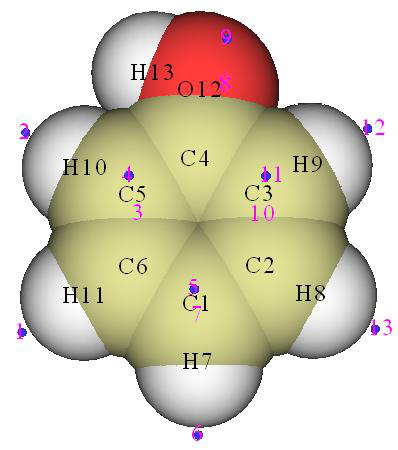
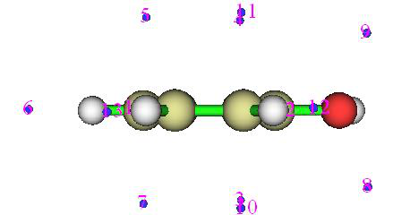
- Copying the ALIE.vmd from "examples\scripts\" to VMD folder
-
Copying the ALIE_isoext.bat and ALIE_isoext.txt from "examples\scripts\" folder to the folder containing Multiwfn.exe
-
Edit the ALIE_isoext.bat, change the default input file to examples\phenol_631Gxx.wfn, change the VMD folder to actual VMD folder on your machine
-
Double click the ALIE_isoext.bat icon to execute it. This script will invoke Multiwfn.exe in current folder to conduct some calculations, then avglocion.cub, density.cub and surfanalysis.pdb will appear in VMD folder
-
Boot up VMD, input source ALIE.vmd in console window, you will immediately see the graph below (In order to gain better effect, I used Tachyon render to generate the image)
In the map above, the displayed surface is ρ = 0.0005 a.u. isosurface. The reason why the commonly used ρ = 0.001 a.u. isosurface is not adopted as the definition of the surface is because if it is employed, then the \(\bar{I}\) distribution on the surface can hardly be distinguished. The cyan spheres correspond to surface minimum of 𝐼̅. The color transition is Blue-White-Red, therefore the blue color highlights the regions having relatively low 𝐼̅ value, where are favorable sites for electrophilic attack.
By default, the color scale of \(\bar{I}\) is 0.32~0.36 a.u., if you find the color scale is not appropriate for present system, you can input for example mol scaleminmax 0 1 0.31 0.38 in the VMD console window to change the lower and upper limits to 0.31 and 0.38, respectively.
4.12.3 Atomic local molecular surface analysis for acrolein¶
It is well known that acrolein (see below) tends to undergo nucleophilic attack at carbonyl
carbon and β carbon; in particular, the former is the primary site for hard nucleophilic reagent. The so-called hard means the electron cloud of the nucleophilic reagent is difficult to polarize; the selectivity of reactive site for this case is usually dominated by ESP.
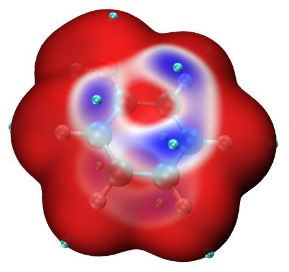
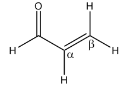
In this example, we will try to interpret the site-selectivity of acrolein by analyzing ESP on its vdW surface. Note that average local ionization energy is only useful for studying electrophilic attack, but completely useless for analyzing nucleophilic attack.
Boot up Multiwfn and input:
Multiwfn session
- examples\acrolein.wfn — Optimized and produced at B3LYP/6-31G** level
- 12 — Quantitative analysis of molecular surface
- 0 — Start the analysis for ESP
After the calculation is finished, choose 0 to visualize surface extrema:
As you can see, there is a surface minimum of ESP at the boundary of α carbon and it is very close to β carbon. This observation indirectly reveals that nuclear charge of α carbon is more heavily screened by electron clouds, and hence is less probable to be the site of nucleophilic attack. However, quantitative analysis of ESP on the whole acrolein surface does not provide a direct and definitive interpretation on the preference of reactive sites, because no surface maxima are found on carbonyl
and β carbons, hence we are unable to directly investigate the characteristic of carbonyl and β carbon.
In Multiwfn, the quantitative analysis can not only be applied to the whole molecular surface, but is also applicable to local molecular surface to reveal characteristic of atom or fragment, see Section 3.15.2.2 for introduction. Here we select option “11 Output surface properties of each atom” in post-processing interface to calculate and output properties of the local surfaces corresponding to each atom. Some of the results are shown below
Note: Average and variance below are in kcal/mol and (kcal/mol)^2 respectively
Atom# All/Positive/Negative average All/Positive/Negative variance
1 -24.35251 NaN -24.35251 NaN NaN 72.72766
2 4.65672 5.74594 -1.45401 9.79575 9.01495 0.78080
3 1.30965 2.36405 -0.88391 2.70896 2.45972 0.24925
4 8.37174 10.35813 -6.00120 36.74187 17.22299 19.51888
5 7.07040 8.67973 -6.35468 49.99108 25.33899 24.65209
6 2.21578 3.02322 -0.73880 5.15593 4.95305 0.20288
7 15.34251 15.34251 NaN NaN 22.85377 NaN
8 14.68486 14.68486 NaN NaN 25.92230 NaN
As you can see, the average ESP values on the local surface of carbonyl carbon (atom 2), α carbon and β carbon are 4.657, 1.310 and 2.216 kcal/mol, respectively. This result clearly explained the site-selectivity; the carbonyl carbon is the most favorable site because the average ESP on its
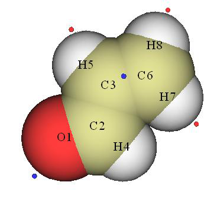
local surface is the most positive, and hence nucleophilic reagents (especially the hard ones) tend to
be attracted to this site. In contrast, on the local surface of α carbon the average of ESP is the smallest compared to the other two carbons, and thus α carbon has less capacity to attract nucleophilic reagents.
Note that some of the outputted data are NaN (Not a Number), these are not bug but understandable. For example, the average of positive part of ESP of atom 1 is NaN, this is because oxygen has large electronegativity, and thus on the local surface of atom 1 the ESP is completely negative, so the average of positive ESP is unable to be computed.
If you are confused about what is "local surface of atoms" or you want to visualize them, after you choose option 11 you can select "y" to output the surface facets to locsurf.pqr file in current folder. Each atom in this file corresponds to a surface facet, the residue index corresponds to its attribution. By this file you can visualize how the whole molecular is partitioned, the method is: boot up VMD program and drag the pqr file into the VMD main window, in "Graphics"-"Representation" set the "Drawing method" as "Points", set the point size to 4, and set "Coloring Method" as "ResID". In VMD main window, select "Display"-"Orthographic" and deselect "Display"-"Depth Cueing". Then load the molecular structure file of acrolein into VMD and render it as CPK mode, you will see the graph below
In the graph, each point represents a surface facet; different colors represent different local surface regions, and each one corresponds to an atom.
Beware that the "imolsurparmode" parameter in settings.ini directly affects the result of local surface analysis, currently we are using imolsurparmode=1.
4.12.4 Quantitative analysis of Fukui function on molecular surface of phenol¶
I have exemplified how to study Fukui function by visualizing its isosurface (Section 4.5.4) and by condensing it to atomic values via population analysis (Section 4.7.3). In this section, I will
illustrate how to perform quantitative analysis of Fukui function f − on molecular surface, including three aspects: (1) Obtain positions and values of minima and maxima of f − (2) Study average value of f − on local molecular surfaces corresponding to various atoms (3) Plotting f − color mapped molecular surface with surface extrema. I will still use phenol as example:
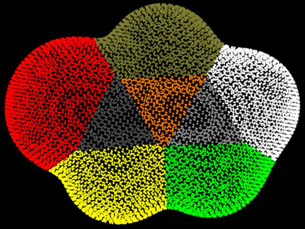
Note: If you are unable to successfully reproduce the steps in parts 1 and 2 described below, please look at the video illustration: http://sobereva.com/multiwfn/extrafiles/Molecular_surface_Fukui.mp4.
Part 1: Obtain positions and values of minima and maxima of f − Boot up Multiwfn (referred to as Multiwfn A) and input following commands examples\phenol.wfn
Multiwfn session
- 12 — Quantitative molecular surface analysis
- 2 — Select the mapped real space function on the molecular surface
- 0 — The function value will be loaded from an external file
- 1 — Set the way to define the surface
- 1 — Use electron density isosurface as molecular surface
0.01 // Because magnitude of Fukui function on default isosurface ρ = 0.001 is often too small, enlarging the isovalue to 0.01 a.u. makes following analyses more significant
0 // Start the surface analysis Multiwfn will generate grid data of electron density and then generate the surface vertices. After the coordinates of these vertices are automatically outputted to surfptpos.txt in current folder, Multiwfn A pauses. Do not terminate Multiwfn A, we boot up another Multiwfn now (referred to as Multiwfn B), and then input below commands in Multiwfn B
Multiwfn session
- examples\phenol.wfn 5 — We use this module to generate Fukui function on the points recorded in surfptpos.txt
- 0 — Set custom operation 1 -,examples\phenol_N-1.wfn
namely Fukui function f − will be calculated
Multiwfn session
- 1 — Electron density
- 100 — Load the coordinate of the points to be calculated from an external file surfptpos.txt t.txt
Next, we terminate Multiwfn B, and return to Multiwfn A, then input t.txt // Load the Fukui function values at the surface vertices from this file
Now you can find minima and maxima information of f − over the molecular surface (ρ = 0.01 a.u. in this context) on screen:
The number of surface minima: 16
# Value X/Y/Z coordinate(Angstrom)
1 0.0005211 -2.128861 -0.802735 -0.931871
2 0.0005205 -2.076117 -0.773086 0.974712
3 0.0005075 -1.359761 -2.550410 -0.046948
[ignored...]
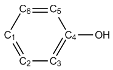
The number of surface maxima: 12
# Value X/Y/Z coordinate(Angstrom)
1 0.0015297 -2.922801 1.103604 0.049305
2 0.0015567 -2.878717 -2.081768 -0.010490
3 0.0015093 -1.538685 2.959157 -0.031439
* 4 0.0024437 -0.034784 -1.889426 -1.367278
5 0.0024425 -0.047988 -1.899397 1.366144
[ignored...]
You can also choose option 0 to visualize distribution of the surface extrema:
Part 2: Study average value of f − on local molecular surfaces In the post-process menu, we choose option 11 to output quantitative statistical data of Fukui
function f − distributed on the local vdW surface corresponding to each atom, then you can find the following information on screen
Atom# All/Positive/Negative average
1 1.88921E-03 1.88921E-03 NaN
2 8.30558E-04 8.30558E-04 NaN
3 1.20307E-03 1.20307E-03 NaN
4 1.28067E-03 1.28067E-03 NaN
5 1.06720E-03 1.06720E-03 NaN
6 9.43611E-04 9.43611E-04 NaN
[ignored...]
NaN means there is no negative value of f − on the local molecular surfaces. From the result it is clear that the average of the Fukui function on the local molecular surface corresponding to ortho (C3 and C5) and para (C1) carbons are larger than that of meta carbons (C2 and C6), this observation correctly reflects the fact that hydroxyl is an ortho-para- director.
Part 3: Plotting f − color mapped molecular surface with surface extrema In the post-process menu of main function 12, choose option “2 Export surface extrema as surfanalysis.pdb in current folder”, then you will find surfanalysis.pdb.
Next, in order to yield a f − color mapped molecular surface via VMD (can be freely downloaded at http://www.ks.uiuc.edu/Research/vmd/), we need to prepare two cube files
containing electron density and f − respectively. To do so, we reboot Multiwfn and input
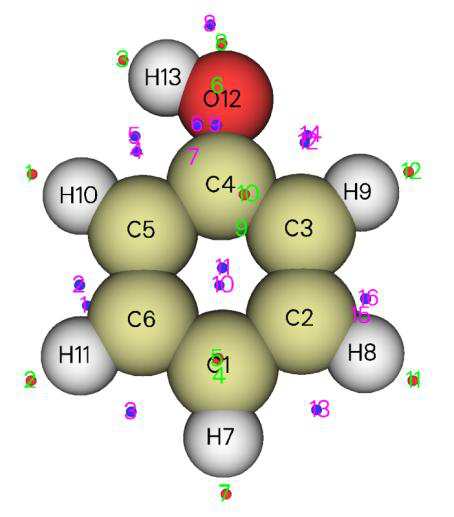
Multiwfn session
- examples\phenol.wfn 5 — Calculate grid data
- 0 — Set custom operation 1 -,examples\phenol_N-1.wfn
- 1 — Electron density
- 3 — High-quality grid
- 2 — Export grid data Now rename the just exported density.cub to mapped.cub. Then input
- 0 — Return to main menu
- 5 — Calculate grid data
- 1 — Electron density
- 3 — High-quality grid
- 2 — Export grid data Now you have density.cub in current folder. Move density.cub, mapped.cub, surfanalysis.pdb to VMD folder. Also copy the VMD plotting script molsurfmap.vmd in “examples\scripts\” folder to VMD folder. After that, boot up VMD and run source molsurfmap.vmd in VMD console window to execute the script, then you will see the
following map, in which cyan and red spheres correspond to maxima and minima on \(\rho = 0.01\) isosurface, respectively. The current coloring method is red-white-blue, corresponding to mapped function varying from 0.0 to 0.002.
You can edit molsurfmap.vmd yourself to change various default plotting settings, including color scale range, isovalue, and so on. They can also be changed in “Graphics” - “Representation” interface of VMD.
4.12.5 Becke surface analysis on guanine-cytosine base pair¶
The concept of Hirshfeld and Becke surface analyses have been introduced in Section 3.15.5, please read them first. In this section I will exemplify how to perform Becke surface analysis on guanine-cytosine (GC) base pair to exhibit the weak interaction between the two monomers. Note
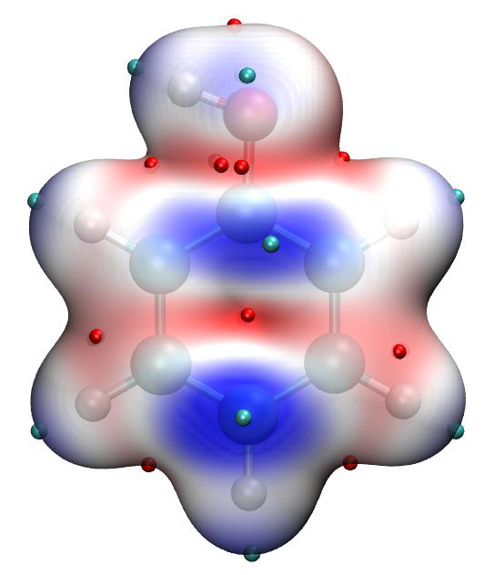
that Hirshfeld surface analysis is more commonly used, see next section.
Boot up Multiwfn and input:
Multiwfn session
- examples\GC.wfn — Generated at M06-2X/6-31+G** level, optimized at PM7 level
- 12 — Quantitative molecular surface analysis
- 1 — Change the definition of surface
- 6 — Use Becke surface. You can also select 5 to use Hirshfeld surface
- 1-13 — The index range of the atoms you are interested in (cytosine in present case)
- 0 — Start calculation
Multiwfn found numerous surface minima, which are meaningless in this case, and at the same time three surface maxima are found
The number of surface maxima: 3
# Value X/Y/Z coordinate(Angstrom)
1 0.0213498 -1.005651 2.428125 0.009227
2 0.0251293 0.533238 0.687258 0.007815
* 3 0.0261531 1.861601 -1.067696 -0.009615
You can choose 0 to visualize them, see below (minima are not shown)
Since the sequence of electron density at these maxima is 3≥2>1, one can expect that the sequence of H-bond strength is O24···H13 ≥ H25···N6 > H29···O8. This conclusion is identical to the AIM bond critical point analysis (Section 4.2.1).
If you want to visualize the Becke surface, simply choose option -3. If you want to plot the Becke surface colored by mapped function value, you need to utilize VMD, and there are two ways: (1) Plot the Becke surface as many points (surface vertices), as will be shown below (2) Plot the Becke surface in terms of isosurface, which will be illustrated in the next section
Select option 8 to export all surface vertices to vtx.pqr in current folder. Each atom in this file corresponds to a surface vertex, and its “Charge” property corresponds to value of mapped function (electron density in current case).
Drag examples\GC.pdb (a pdb file containing the same geometry as GC.wfn) into main window of VMD program. Select "Graphics" - "Representation", change the drawing method to "Licorice" and decrease bond radius to 0.2. Then drag the vtx.pqr into VMD main window, select "Graphics" - "Representation", change the drawing method to "Points", set coloring method to "Charge", properly enlarge the point size, run command color scale method BWR in VMD console window (this command changes coloring method to blue-white-red). Now you should see
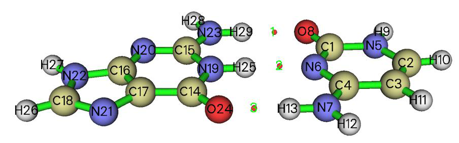
In above figure Becke surface is represented by points, and the three red zones correspond to high electron density regions, which stem from presence of H-bonds. This example demonstrated that Becke surface analysis is useful to reveal the region where intermolecular interaction is evident.
The present analysis can also be realized by means of Hirshfeld surface analysis, see next section, and the computational cost is lower when the number of atoms is high.
4.12.6 Hirshfeld surface analysis and fingerprint plot analysis on urea crystal¶
In this section we perform Hirshfeld surface analysis for urea crystal to understand the intermolecular interaction in the crystal.
Note: “Performing Hirshfeld surface analysis by Multiwfn to visually display interactions in molecular crystals and complexes” (http://sobereva.com/701, in Chinese) is an extremely detailed blog article which comprehensively introduces the Hirshfeld/Becke analysis in Multiwfn and present very rich examples, highly recommend reading! If you have read it, you do not need to read the present section.
Preparation of structure for analysis You can directly use .cif file of urea crystal as input file, a large enough supercell is needed to construct (can be done via option 19 in subfunction 7 of main function 300), so that the molecule we focused on could be fully immersed in environment molecules. You can also perform analysis based on a molecular cluster (and this is the better way), which contains a central molecule and a batch of molecules surrounding it, Multiwfn directly provides function to build the cluster based on crystal structure. You just need to boot up Multiwfn and input
urea.cif //.cif file of urea, please find it from Internet. PS: DO NOT manually extend it to supercell, otherwise computational cost will significantly increase
Multiwfn session
- 300 — Main function 300
- 7 — Geometry operation
- 25 — Extract a molecular cluster (central molecule + surrounding ones)
- 1 — The whole molecule containing atom 1 is taken as the central molecule, this molecule and all surrounding ureas close to it will be extracted
[Press ENTER button] // Use recommended criterion of 1.2 to detect contact
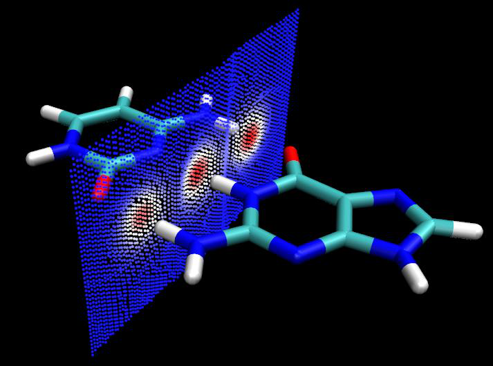
Now the cluster has been extracted out, the atom indices of the central urea is shown on screen, please record it since which will be used later. Then you can use option 0 to visualize the cluster structure, if it is found to be reasonable, then you can use use corresponding option to export it as a structure file.
Hirshfeld surface analysis on urea cluster In this example we use the cluster model of urea shown below, which can be constructed in the above way. The corresponding geometry file examples\Urea_crystal.pdb contains 11 ureas, the central one will be defined as the fragment in our Hirshfeld surface analysis.
Boot up Multiwfn and input examples\Urea_crystal.pdb
Multiwfn session
- 12 — Quantitative molecular surface analysis
- 1 — Change surface type
- 5 — Use Hirshfeld surface 16,36,58,2,77,55,34,13
Start calculation. Note that the default mapped function dnorm is used here After the calculation is finished, you can select option 8 to export the surface vertices with the mapped electron density to vtx.pqr, and then plot them in VMD via the way described in the last section.
Next, we draw fingerprint plot. Input below commands
Multiwfn session
- 20 — Fingerprint plot analysis
- 0 — Start fingerprint analysis
- 1 — Save fingerprint plot to an image file You will find a .pdf file has generated in current folder, after opening it you will see the graph below
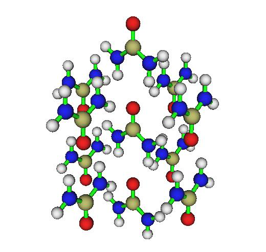
In this figure, X and Y axes correspond to di and de, respectively. Each vertex on the Hirshfeld surface corresponds to a point in the map. It can be seen that there are two spikes at the bottom left of the plot, this observation suggests that urea behaves as both H-bond acceptor (the bottom spike, di > de) and H-bond donor (the left spike, di < de). The yellow, green and purple colors indicate that the point density at corresponding regions is high, medium and low, respectively.
Fingerprint plot for local contact surface In Multiwfn, the fingerprint plot can be drawn not only for overall Hirshfeld surface, but also for local contact surface (see Section 3.15.5 for detail). Let us check the fingerprint plot of the local contact surface between the four hydrogens in the central urea and all atoms in the surrounding ureas.
After closing the window of showing fingerprint plot, select option -1 to return to upper level of menu. Now, we need to define "inside atoms" and "outside atoms", only the vertices on the contact surface between the two sets will be taken into account during the fingerprint plot analysis. We choose option 1 to define the "inside atoms". You will be asked to input two conditions in turn, their intersection will define the set. We first press ENTER button directly to use default atom range, namely all atoms in the central urea, and then input H to only select all hydrogens among them. As can be seen from screen, all the four hydrogens in the central urea now have been defined as the "inside atoms". Since the default "outside atoms" are just all atoms in surrounding ureas, we do not need to modify it.
Now, select option 0 to start the fingerprint plot analysis again. You can find following information on screen:
The area of the local contact surface is 65.639 Angstrom^2
The area of the total contact surface is 94.511 Angstrom^2
The local surface occupies 69.45% of the total surface
This information indicates that the area occupied by the local contact surface defined by us is 65.6 Å2. Clearly, by properly utilizing this feature, you can obtain the area corresponding to any specific contact between the central molecule and the surrounding molecules.
After that, choose option 1 to save corresponding fingerprint plot as a .pdf file, then after
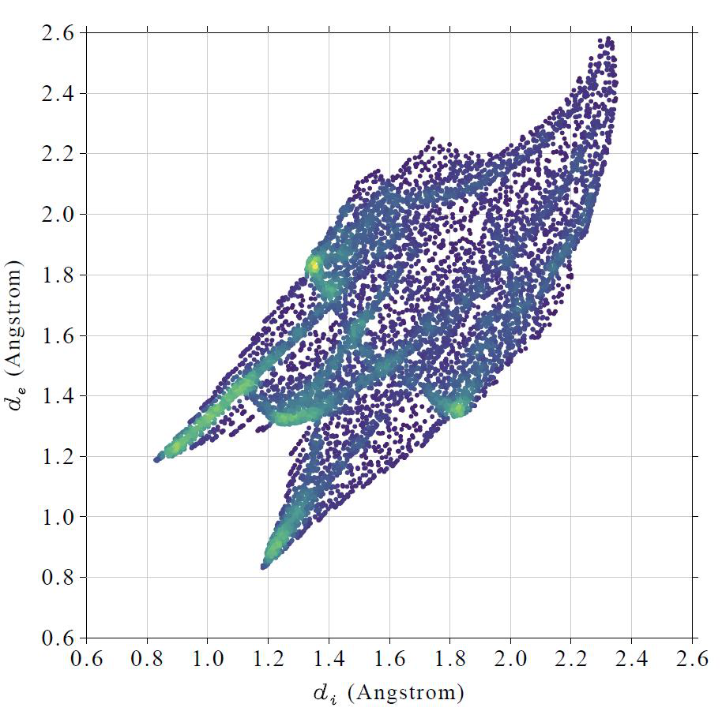
opening it you will see
Since this time we only considered the four hydrogens in the central urea, which purely behave as hydrogen donor, so only one spike on the left side of the plot can be observed. The gray points in the map above correspond to the points on the entire Hirshfeld surface but not on the current local contact surface.
It is interesting to check the shape of the local contact surface. To this end, after closing the fingerprint map, we choose option 4 to export all points on the local contact surface to finger.pqr in current folder. Plot them in VMD by using the method described in Section 4.12.5, you will see
Clearly, this surface well exhibits the contact between the hydrogens in the central urea and the atoms in the surrounding ones. There are four red regions on the surface, which correspond to the four H-bonds, where H atoms in the central urea behave as a H-bond donor.
Next, we check the fingerprint plot between the hydrogens in the central urea and the oxygen
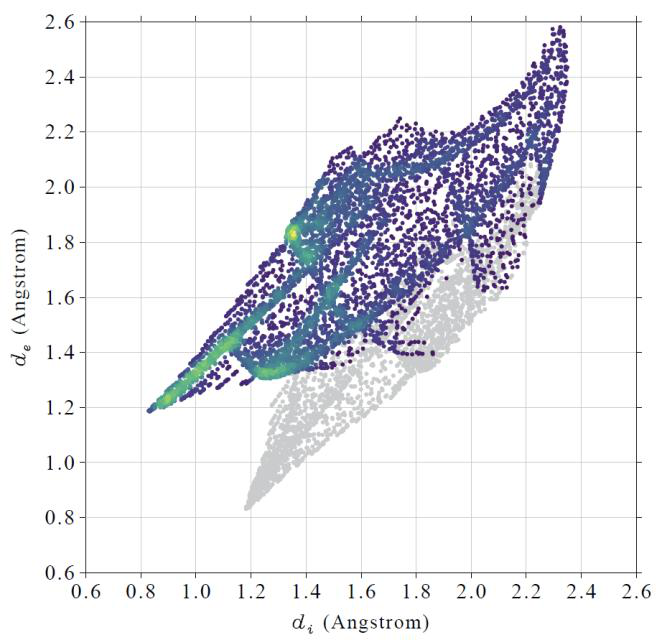
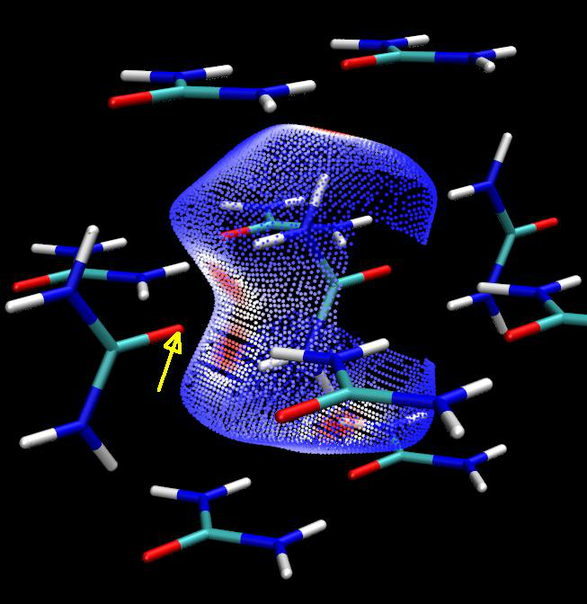
atom marked by the yellow arrow in above figure. Input the following commands
Multiwfn session
- -1 — Return to upper level of menu
- 1 — Set the inside atoms to consider [Press ENTER button]
Multiwfn session
- The inside atoms must be hydrogen 2 — Set the outside atoms to consider
- 76 — The index of the oxygen in one of surrounding urea [Press ENTER button]
- Do not set element filter condition 0 — Start fingerprint analysis From the outputted information on screen, you can find the local contact surface produced this time is 6.8 Å2, which corresponds to 7.2% of total contact surface area. Then we draw fingerprint plot and the corresponding surface vertices, as shown below
In the fingerprint plot you can see that the distribution scope of surface points is narrow, and the spike is quite evident, suggesting the strong H-bond character due to the contact of the H and O.
Fingerprint plot is especially useful for comparison of intermolecular interactions in different crystals, see CrystEngComm, 11, 19 (2009) for discussions.
Obtain contact area between very element pair Multiwfn is also able to simultaneously print contact area between every element pair and obtain the percentage occupancy from the total contact area. To this aim, after entering option “20 Fingerprint plot and local contact analyses”, choose option “3 Calculate contact area between different elements”, then the following information will be immediately printed:
Inside element, outside element, their contact area (Angstrom^2) and percentage (%)
H-H 42.602 45.076
H-C 3.355 3.550
H-N 4.101 4.339
H-O 15.581 16.486
C-H 4.943 5.230
N-H 7.156 7.572
O-H 16.774 17.748
The same as above, but do not distinguish inside and outside elements
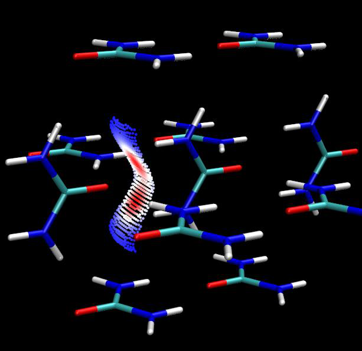
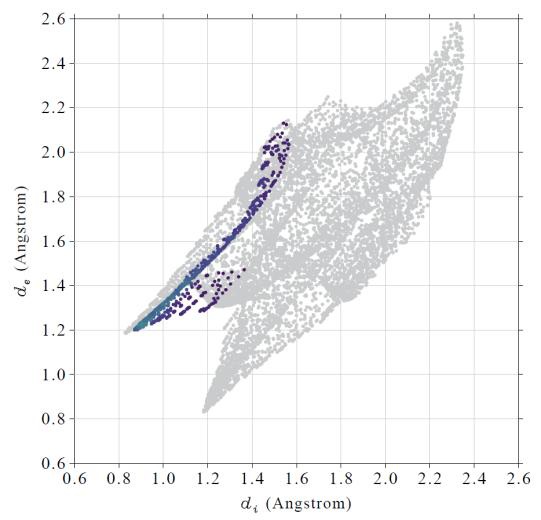
H-H 42.602 45.076
H-C/C-H 8.298 8.780
H-N/N-H 11.257 11.910
H-O/O-H 32.355 34.234
Area of total contact surface is 94.511 Angstrom^2
The information is clear to understand. For example, as highlighted by yellow, the contact area between inside H atoms and outside O atoms is 15.581 Å2, that between inside O atoms and outside H atoms is 16.774 Å2, which occupy 16.486% and 17.748% of total contact area (94.511 Å2), respectively. They totally have percentage contribution of 16.486% + 17.748% = 34.234%.
To inspect more intuitively, you can copy the data printed by Multiwfn and import them to e.g. Origin software and then plot pie chart like this:
Clearly, H-N/N-H and H-O/O-H types of contact correspond to typical intermolecular H-bond, from the pie chart one can see that nearly half of contact area relates to H-bond. Although H-H contact contributes to as many as 45.1% of Hirshfeld surface, it evidently does not correspond to favorable intermolecular interaction, since the hydrogens show positive charge and thus the H-H contact is electrostatically repulsive.
Using VMD to plot color-mapped isosurface of Hirshfeld/Becke surface Here I describe how to easily plot very pretty Hirshfeld surface mapped by electron density with promolecular approximation, this map looks much better than those shown above. The urea cluster is still taken as example.
Boot up Multiwfn and input examples\Urea_crystal.pdb
Multiwfn session
- 12 — Quantitative molecular surface analysis
- 1 — Change surface definition
- 5 — Use Hirshfeld surface 16,36,58,2,77,55,34,13
Multiwfn session
- Start calculation -2 — Export the grid data used to define Hirshfeld surface as surf.cub in current folder
- 13 — Calculate grid data of mapped function and export it to mapfunc.cub in current folder Now you have surf.cub and mapfunc.cub in current folder, move them to the VMD folder. Then copy the examples\scripts\hirsh_rho.vmd file into the VMD folder. Boot up VMD, input source hirsh_rho.vmd in VMD console window to run this script. For the present case it is better to also input material change diffuse Translucent 0.8 in the console window to make the surface brighter.
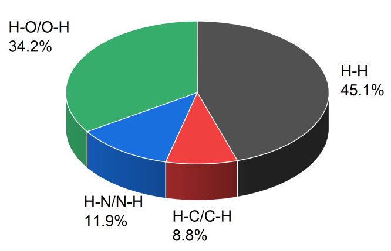
Finally, you can see the graph below. Note that the plotting script sets color transition to Blue-White-Red, which corresponds to electron density varying from 0.0 to 0.015 a.u. Clearly, from the graph one can easily recognize the evident intermolecular interaction regions.
By the way, sometimes you need to fine tune the color scale. The default value can be modified in hirsh_rho.vmd. You can also directly define it in this way in VMD: Enter “Graphics” - “Representation”, choose the representation corresponding to the isosurface, then click “Trajectory” tab, input lower and upper limits in the two text boxes and then press ENTER button to take effect.
Based on the GC.wfn used in Section 4.12.5, you can use the same method as above to plot electron density mapped Hirshfeld surface, see below.
Via very similar procedure, you can also plot \(d_{\mathrm{norm}}\) mapped Hirshfeld or Becke surface, there are only two difference compared to the above case: (1) In main function 12, after choosing option to 1 to switch to Hirshfeld or Becke surface, you need to choose option 2 and select dnorm as mapped function (2) examples\scripts\hirsh_dnorm.vmd script should be used instead of the hirsh_rho.vmd used above.
Much more examples of Hirshfeld/Becke analysis and relevant skills can be found in my blog article http://sobereva.com/701 (in Chinese).
4.12.7 Predict density of molecular crystal of FOX-7¶
As introduced in Section 3.15.1, many condensed phase properties of a molecule can be
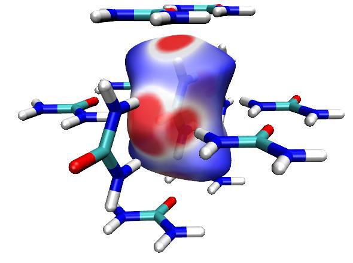
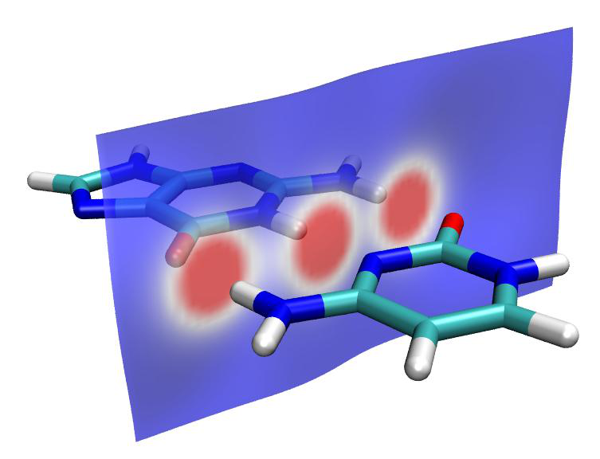
predicted based on the result of quantitative molecular surface analysis of electrostatic potential (ESP). For example, in Mol. Phys., 107, 2095 (2009), Politzer et al. showed that crystal density of molecules only containing C, H, N, O can be predicted as
where α = 0.9183, β = 0.0028 and γ = 0.0443 when the wavefunction is generated at B3PW91/6-31G** level and the unit of M/Vm and 𝜈𝜎tot 2 are g/cm3 and (kcal/mol)2, respectively. In this section, I illustrate how to use above formula to predict density of molecular crystal of FOX-7 (1,1-diamino-2,2-dinitroethene), which is an insensitive high explosive compound. More illustrations of property prediction can be found in my blog article "Using Multiwfn to predict crystal density, heat of vaporization, boiling point and solvation free energy" (in Chinese, http://sobereva.com/337).
First, we optimize geometry of FOX-7 and yield wavefunction file at B3PW91/6-31G** level, which is the level used by Politzer et al. in their Mol. Phys. paper. The resulting FOX-7.wfn has provided as examples\FOX-7.wfn.
Boot up Multiwfn and input below commands: examples\FOX-7.wfn
Multiwfn session
- 12 — Quantitative molecular surface analysis
- 0 — Start analysis for default real space function (ESP) on default surface (0.001 a.u. isosurface of electron density)
After a while, you will find below output on screen
Volume: 942.48700 Bohr^3 ( 139.66220 Angstrom^3)
Estimated density according to mass and volume (M/V): 1.7606 g/cm^3
...[ignored]
Product of sigma^2_tot and miu: 0.00020164 a.u.^2 ( 79.40119 (kcal/mol)^2)
Internal charge separation (Pi): 0.03740373 a.u. ( 23.47121 kcal/mol)
From the output, we find that \(M/V_m=1.7606\ g/cm^3\) 2totνσ=79.40119 (kcal/mol)2, therefore
the density could be predicted as 0.91831.7606+0.002879.40119+0.0443=1.883 g/cm3. The experimental density of FOX-7 crystal is 1.885 g/cm3, which can be found at corresponding wiki page (https://en.wikipedia.org/wiki/FOX-7). Clearly, our prediction is extremely successful, the error is merely -0.002 g/cm3! However, the surprisingly good result is fortuitous to a large extent, since according to the test in the Mol. Phys. paper, the RMS error using above prediction formula is 0.047 g/cm3.
4.12.8 Quantitative analysis of orbital overlap distance function D(r) on thioformic acid molecular surface¶
The content of this section was kindly contributed by Arshad Mehmood and slightly adapted by Tian Lu.
This example is a continuation of Section 4.5.7. Here I illustrate the quantitative analysis of orbital overlap length function D(r) on molecular electron density isosurface of thioformic acid.
Boot up Multiwfn and input following commands:
Multiwfn session
- examples\ThioformicAcid.wfn — Thioformic acid optimized at B3LYP/6-311++G(2d,2p)
- 12 — Quantitative analysis of molecular surface
- 2 — Select mapped function
- 6 — Orbital overlap distance function D(r), which maximizes EDR(r;d) with respect to d
- 2 — Use default value of total number, start and increment of EDR exponents. Please consult Section 4.5.7 for more information.
0 // Start analysis now! Now the analysis starts. This step will take some time. Once calculation is finished, following results will be printed on screen along with other information:
Global surface minimum: 2.789918 a.u. at 1.983402 -0.346198 1.757884 Ang
Global surface maximum: 3.541349 a.u. at -2.861073 -1.074395 -0.095237 Ang
The number of surface minima: 4
# Value X/Y/Z coordinate(Angstrom)
1 3.296958 -1.622302 2.055665 0.423383
2 3.218284 0.950838 2.841231 0.010991
* 3 2.789918 1.983402 -0.346198 1.757884
4 2.790103 2.078805 -0.344424 -1.731277
The number of surface maxima: 10
# Value X/Y/Z coordinate(Angstrom)
* 1 3.541349 -2.861073 -1.074395 -0.095237
2 3.401958 -0.539716 2.324441 0.014652
3 3.502485 0.041422 -2.239222 -0.308278
4 3.502696 0.089030 -2.257271 0.004859
5 3.494004 0.207205 -2.075594 -0.673828
6 3.496480 0.164501 -2.070255 0.707373
7 3.359381 0.542328 1.465019 -1.650518
8 3.358980 0.496994 1.456262 1.657761
9 3.311711 2.030429 1.904600 0.023877
10 2.918240 2.847314 -1.370280 0.021275
Now select 0 to view surface minima and maxima:
This graph shows molecular structure and surface extrema (red and blue spheres correspond to surface maxima and minima, respectively). It can be seen that surface minima is present on oxygen
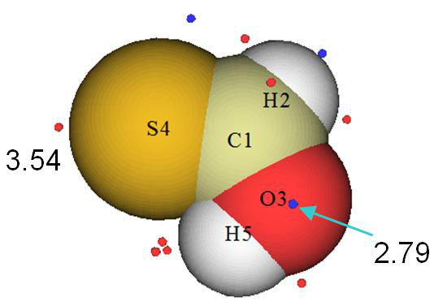
atom due to compact lone pair and surface maxima is located on sulfur atom due to its more diffuse and weakly bound lone pair electrons.
4.12.9 Evaluate vdW surface area of the whole system as well as individual fragment¶
Note: Chinese version of this section is my blog article “Using Multiwfn and VMD to calculate molecular surface area and fragment surface area” (http://sobereva.com/487, in Chinese), which also contains more discussions.
After reading Section 4.12.1, you must have already known how to evaluate area of molecular vdW surface. In this section, I will discuss more about this topic. Dopamine will be employed as example, its properly optimized geometry is shown below
Evaluating vdW surface area of dopamine corresponding to condensed phase
According to the Bader's paper J. Am. Chem. Soc., 109, 7968 (1987), ρ = 0.001 and 0.002 a.u. isosurfaces can be defined as vdW surface in gas and condensed phase, respectively. The volume of the latter is smaller than the former, because in condensed phase the vdW surface penetration must be evident due to intermolecular interaction. Here we will calculate area of vdW surface corresponding to condensed phase for dopamine. Boot up Multiwfn and input
examples\dopamine.wfn // Generated using B3LYP/6-31G* level. Commonly the quality of density at this level is absolutely adequate
Multiwfn session
- 12 — Quantitative analysis of molecular surface
- 1 — Select the way to define surface
- 1 — Isosurface of electron density
- 0.002 — Isovalue (a.u.)
- 6 — Start analysis without consideration of mapped function You only need to pay attention to below line in the output:
Overall surface area: 648.64293 Bohr^2 ( 181.63855 Angstrom^2)
That means, the area of the whole molecule is 181.6 Å2.
Evaluating surface area of amino group in dopamine Next, I illustrate how to calculate surface area of a specific fragment, the amino group in the dopamine is taken as example. In the post-processing menu, we input
Multiwfn session
- 12 — Output surface properties of specific fragment
- 3,19,20 — The indices of the atoms in the amino group You will see
Overall surface area: 99.67659 Bohr^2 ( 27.91229 Angstrom^2)
The contribution of the amino group to the whole vdW surface thus can be calculated as 27.9/181.6*100%=15.4%.
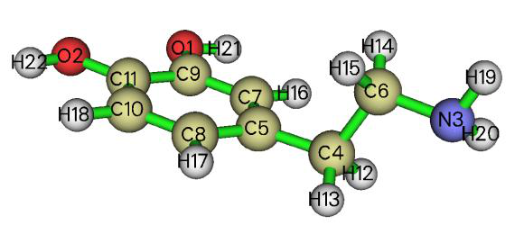
If you want to visualize the vdW surface that attributed to the amino group, we should input y to let Multiwfn export locsurf.pqr in current folder. Then load this file into VMD visualization program (http://www.ks.uiuc.edu/Research/vmd/), in the "Graphics" - "Representation" set "Drawing method" as "Points", set "Coloring method" as "ResID", and then load the structure file of present system (examples\dopamine.xyz) into VMD to also plot the molecular geometry in the map, after slight adjustment you will see
In above figure, each point denotes a vertex comprising the electron density isosurface of 0.002 a.u., the blue area corresponds to the local region belonging to the amino group. Clearly, the partition of the entire vdW surface is very reasonable, thus the outputted area of the amino group by Multiwfn must be reliable and meaningful.
Evaluating vdW surface area without wavefunction information Sometimes we are difficult to generate wavefunction file due to various reasons, in this case we can still use Multiwfn to evaluate vdW surface area. In this case, the electron density we employed should be promolecular density, which is the molecular electron density approximately constructed by simply superimposing the electron density of each atom in its isolated state according to the coordinates of the atoms in the molecule..
For example, we only have examples\dopamine.xyz in hand, you can boot up Multiwfn and load this file, then input
Multiwfn session
- 12 — Quantitative analysis of molecular surface
- 1 — Select the way to define surface
- 2 — Isosurface of a specific real space function
- 1 — Promolecular electron density
- 0.002 — Isovalue (a.u.)
- 6 — Start analysis without consideration of mapped function The calculated result is
Overall surface area: 697.18104 Bohr^2 ( 195.23060 Angstrom^2)
Obviously the result is reasonable, the value 195.2 \(^{2}\) is in qualitative agreement with the 181.6 Å2 we previously calculated based on the B3LYP/6-31G* wavefunction.
If then we calculate area of the amino group moiety, the result will be 31.5 \(^{2}\), which is also close to the 27.9 Å2 calculated based on the DFT density. In particular, the occupancy of this group 31.5/195.2*100%=16.1% is even nearly quantitatively consistent with the 15.4% we calculated before.
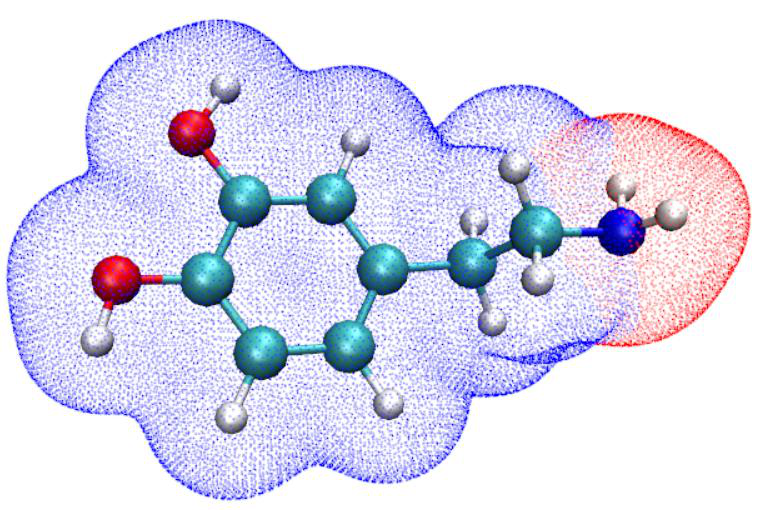
4.12.10 Quantification of area of sigma-hole and pi-hole¶
Introduction
σ-hole and π-hole correspond to local regions with evident positive electrostatic potential (ESP) on van der Waals (vdW) surface due to depletion of σ-electron and π-electron, respectively. The region corresponding to these holes can behave as electron acceptor (local Lewis-acid) to form non-covalent interactions that are dominated by electrostatic attraction, such as halogen bond. If you are not familiar with these two concepts, reading review article J. Comput. Chem., 39, 464 (2017) is
recommended. In literature, the σ-hole and π-hole are commonly revealed via analysis of ESP extrema on vdW surface, the ESP value at the corresponding extrema is often employed as a quantitative measure of potential strength as electron acceptor.
In the present section, I will show it is also possible to use Multiwfn to calculate surface area
corresponding to selected σ-hole and π-hole, and meantime based on the outputted file, the corresponding local surface could be directly visualized in VMD. I suggest you read part 2 of Section 3.15.2.2, in which the algorithm used in this analysis is described. ClPO2 is taken as example
here, which contains σ-hole at the end of chlorine atom as well as π-hole above and below the phosphorus atom.
Quantitative analysis of ESP on vdW surface First, we carry out regular quantitative analysis of ESP on vdW surface. Boot up Multiwfn and input
Multiwfn session
- examples\ClPO2.fch — Geometry and wavefunction were produced at PBE0/def2-TZVP
- 12 — Quantitative molecular surface analysis
- 0 — Start analysis, the mapped function is default to ESP As can be seen from the output, three ESP maxima on the vdW surface are found, their ESP values and coordinates are shown below:
# a.u. eV kcal/mol X/Y/Z coordinate(Angstrom)
1 0.07562734 2.057924 47.456909 -1.949844 -0.043516 -0.320257
2 0.04258971 1.158925 26.725470 0.015842 -0.054525 3.395121
* 3 0.07568641 2.059532 47.493977 1.945305 0.044502 -0.234288
Now enter option 0 to check index and visually examine position of the surface ESP maxima, see the left side of the figure below (all surface minima are hidden). If you plot ESP colored vdW surface as well as surface extrema according to the method described in Section 4.A.13, you can obtain right side of the graph below, in which red and blue correspond to positive and negative ESP, respectively.
From above figure it can be seen that surface maxima 1 and 3 correspond to π-hole at the two sides, while maximum 1 corresponds to σ-hole.
Check surface region corresponding to positive ESP value
Since σ-hole and π-hole correspond to evidently positive ESP value, it is naturally expected that area of positive ESP region around a surface maximum is a direct measure of σ/π-hole size. Now assume that we want to measure area of π-hole corresponding to maximum 3, in the post-processing menu we should input below commands
Multiwfn session
- 14 — Calculate area and function average in a region around a surface extreme
- 2 — Surface maximum
Multiwfn session
- 3 — Select maximum 3 (corresponding to one of π-holes)
- 0 — Set criterion as 0 a.u. Now we can find below output
Number of surface vertices in selected surface region: 4307
Area of selected surface region: 55.946 Angstrom^2
Average value of selected surface region: 0.02650 a.u.
Product of above two values: 1.48230 a.u.*Angstrom^2
The output indicates that there are 4307 surface vertices directly or indirectly connected to maximum 3 with ESP values larger than 0 (i.e. positive ESP), the area of this local surface is 55.94 \(^{2}\) and average ESP is 0.0265 a.u. According to chemical intuition, the calculated area is obviously
too large compared to expected π-hole area, what is the reason?
In current folder, you can find a file named selsurf.pqr, which contains coordinate all selected surface vertices and its "Charge" column corresponds to ESP in a.u. Now we load this file into VMD program. In addition, in the post-processing menu of Multiwfn, we choose option 5 to export a pdb file containing molecular geometry, and then also load this file into VMD. In the "Graphics" - "Representation" panel of VMD, we set "Drawing Method" of the molecule as "Licorice" with "Bond Radius" of 0.2, then set "Drawing Method" of the surface vertices as "Point" with "Size" of 16, then set "Coloring Method" as "Charge". The current graph should look like below
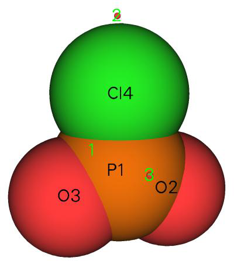
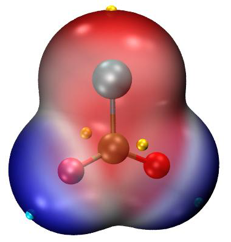
In this graph, the bluer the point, the higher the ESP value. It is evident that our currently selected
local surface does not only correspond to a π-hole, but corresponds to the entirely positive ESP surface region.
Calculate surface area corresponding to π-hole Clearly, if we want to only study a region corresponding to a π-hole, the ESP criterion should be set to a larger value than 0 but smaller than the ESP value at the π-hole surface maximum (0.0756 a.u., see above). In order to find an appropriate criterion, in the "Graphics" - "Representation" panel, we switch "Selected Molecule" to the entry corresponding to selsurf.pqr, then input charge > 0.04 in "Selected Atoms" textbox, now the graphical window becomes:
From the graph it can be seen that criterion of 0.04 a.u. is suitable for defining the local surface
corresponding to π-hole of present system. The map above contains two blue local surfaces since there is a π-hole at each side of the phosphorus atom. To calculate area of each π-hole, we input
Multiwfn session
- 14 — Calculate area and function average in a region around a surface extreme
- 2 — Surface maximum
Multiwfn session
- 3 — Select maximum 3 (corresponding to one of π-holes)
- 0.04 — Set criterion as 0.04 a.u. The result is
Number of surface vertices in selected surface region: 271
Area of selected surface region: 3.570 Angstrom^2
Average value of selected surface region: 0.05772 a.u.
Product of above two values: 0.20608 a.u.*Angstrom^2
The calculated 3.57 Å2 is a very reasonable area of a typical π-hole. If you visualize the generated selsurf.pqr by VMD to examine the selected local surface, you will find the region just corresponds
to one of the two π-holes shown in above surface map. Evidently, the total area of the π-holes in
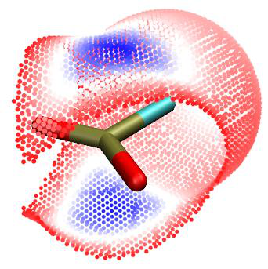
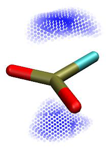
current system should be 2*3.57=7.14 Å2.
Calculate surface area corresponding to σ-hole Next, we use similar way to calculate area of the σ-hole at the end of the chlorine atom. In this case we should not use 0.04 a.u. as criterion, because the ESP value at surface maximum of the σ-hole is only 0.0425 a.u. In VMD, we can try different criterions by inputting charge > xxx until
finding the best one to represent the σ-hole. After a few attempts, 0.03 a.u. was found to be a reasonable value, therefore we input below command in the post-processing menu
Multiwfn session
- 14 — Calculate area and function average in a region around a surface extreme
- 2 — Surface maximum
Multiwfn session
- 2 — Select maximum 2 (corresponding to the σ-hole)
- 0.03 — Set criterion value as 0.03 a.u. The area is found to be 4.88 Å2, while average ESP value in this region is 0.03617 a.u., which is
evidently smaller than that of the π-hole. If you plot the exported selsurf.pqr in VMD as points, and set color scale as 0.0~0.05 (In the "Representation" panel, choose "Trajectory" tab, then set "Color Scale Data Range"), you will see the following map, indeed the selected surface region well exhibits
expected σ-hole character.
It is important to point out that the calculated area is directly dependent on the choice of the criterion, while there is no unique way of determining the perfect criterion. In practical study, you can try to define the criterion as e.g. 60% of ESP value at corresponding surface maximum, or consider defining the criterion as a value lower than surface maximum by e.g. 10 kcal/mol.
Noticeably, option 14 can not only measure area around a surface maximum, but can also calculate area around a surface minimum. Thus, you can try to use this feature to quantify the area corresponding to various lone pairs.
4.12.11 Basin-like analysis of molecular surface for electrostatic potential¶
Just as the whole 3-dimensions molecular space can be partitioned as basins based on e.g. electron density and electron localization function so that character of local regions could be discussed, it is also possible to employs analogous idea to partition the whole molecular surface as individual local surface based on a specific mapped function, so that chemically interesting information could be gained. In this example, we will decompose the whole vdW surface of ClPO2 to contributions that source from its surface ESP minima and maxima. Please read part 3 of Section
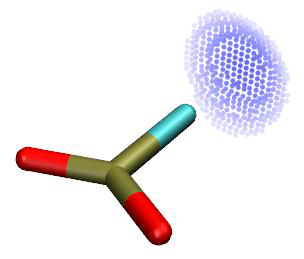
3.15.2.2 to gain basic knowledge about the algorithm employed in this analysis. The ClPO2 has already been investigated by means of molecular surface analysis in Section 4.12.10, please read it if you have not.
Boot up Multiwfn and input:
Multiwfn session
- examples\ClPO2.fch — Geometry and wavefunction were produced at PBE0/def2-TZVP
- 12 — Quantitative molecular surface analysis
- 0 — Start analysis, the mapped function is default to ESP
- 15 — Basin-like partition of surface and calculate areas
Then you can find below output on screen
Minimum 1 N_vert: 1596, 19.615 Angstrom^2 Avg. value: -0.023076 a.u.
Minimum 2 N_vert: 1613, 19.874 Angstrom^2 Avg. value: -0.022824 a.u.
Maximum 1 N_vert: 1312, 16.689 Angstrom^2 Avg. value: 0.028729 a.u.
Maximum 2 N_vert: 1753, 21.539 Angstrom^2 Avg. value: 0.023524 a.u.
Maximum 3 N_vert: 1244, 16.040 Angstrom^2 Avg. value: 0.029336 a.u.
Above output presents information of "surface basins" (i.e. local molecular surfaces) corresponding to different surface extrema. The "N_vert" denotes the number of surface vertices belonging to the surface basin, the area as well as average of the mapped function in the surface basin are also shown. Multiwfn also exported a file named surfbasin.pdb in current folder, which contains all surface vertices, their B-factors correspond to the index of the surface basin that the vertex attributed to (positive and negative Beta values correspond indices of surface maxima and minima, respectively). Index of a surface basin is identical to index of corresponding surface extreme, each surface basin contains and only contains one surface extreme. Note that surface minimum with positive value and surface maximum with negative value do not have accompanied surface basin, this is easy to understand if you have correctly understood the algorithm described in Section 3.15.2.2.
In order to vividly examine the surface basins, you can load the surfbasin.pdb into VMD, then set drawing method as "Points" while set coloring method as "Beta". Also, we choose corresponding options in Multiwfn to export pdb file of molecular structure (option 5) and surface extreme (option 2) and then display them in VMD. Finally, you can obtain the graph below, calculated data are also marked
In the current graph, red points around the minimum 1 collectively exhibit the region of surface basin 1, while gray and iceblue points display surface basin corresponding to maxima 1 and 2,
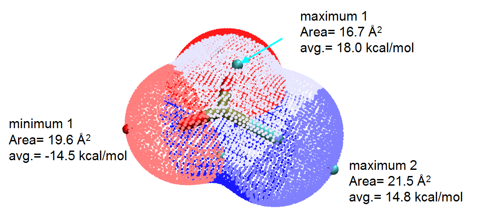
respectively. Clearly, via the analysis we currently employed, we are able to make clear the intrinsic contributions that stem from different extrema to the overall positive or negative surface region. For example, the percentage contribution to the positive surface region due to the maximum 2, which
results from σ-hole of the chlorine atom, is 21.539/(16.689+21.539+16.040)×100%=39.7%.
The sum of areas of all maxima (minima) is not exactly identical to the positive (negative) surface area outputted in the "Summary of surface analysis" section, because there are some boundary surface facets, whose three vertices do not have identical attribution. These facets are ignored during calculation of area and average of function value of surface basins.
By the way, you can also make VMD to solely display specific surface basin. For example, by inputting beta=-1 and beta=2 in "Selected Atoms" textbox of "Graphics" - "Representation" panel of VMD and then set color as orange, you will respectively observe surface basin corresponding to minimum 1 and maximum 2:
It is noteworthy that, due to the C2v molecular symmetry, minima 1 and 2 should have identical values, maxima 1 and 3 should also have identical values. The slight violation of the equivalency, as shown in above computed data, is due to numerical aspect reasons. When you report data of the
surface basins corresponding to the π-hole (maxima 1 and 3), it is reasonable to take the average of them, that is the area in each side should be (16.040+16.689)/2=16.4 Å2.
4.12.12 Estimate kinetic diameter for small molecules¶
Note: Chinese version of this section with more discussions is my blog article “Using Multiwfn to calculate dynamic diameter of molecules” (http://sobereva.com/503).
The kinetic diameter is an important quantity in the study of gas separation. Most cited values of kinetic diameter of small molecules are taken from Breck's book Zeolite Molecular Sieves; Structure, Chemistry and Use, which was published in 1974. In J. Phys. Chem. A, 118, 1150 (2014), the authors proposed a general way of calculating kinetic diameter purely based on isosurface of electron density. As exemplified below (adapted from the J. Phys. Chem. A paper), the distance enclosed by the two black arrows could be used to define the kinetic diameter
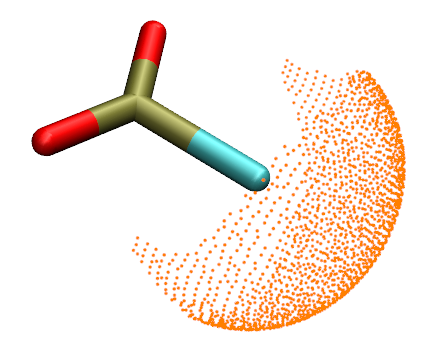
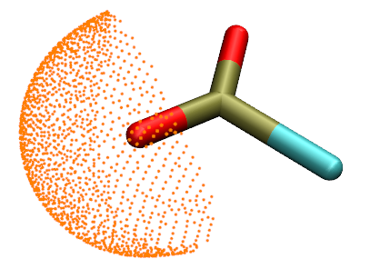
In the paper, it is found that the calculated values match best to the Breck's values if isovalue of electron density is set to 0.0015 a.u. when PBE0/def2-TZVP is used in the wavefunction generation.
In this section, I will show how to use the quantitative molecular surface analysis module to realize the above-mentioned method to calculate kinetic diameter for a typical molecule, CO. The .fch file yielded by optimization task at PBE0/def2-TZVP level has been provided as examples\CO.fch.
Before doing the calculation, we should use main function 0 to check the orientation of the molecule in the CO.fch, as shown below
Clearly, the molecular axis is exactly parallel to the Z-axis, therefore the kinetic diameter can be calculated as difference between surface vertex with most positive X value and that with most negative X value (the surface is defined as 0.0015 a.u. isosurface of electron density).
Now we conduct the calculation. Boot up Multiwfn and input examples\CO.fch
Multiwfn session
- 12 — Quantitative analysis of molecular surface
- 1 — Select the way to define surface
- 1 — Isosurface of electron density
- 0.0015 — Isovalue 6
Among all surface vertices:
Min-X: -1.7527 Max-X: 1.7528 Angstrom
Min-Y: -1.7527 Max-Y: 1.7528 Angstrom
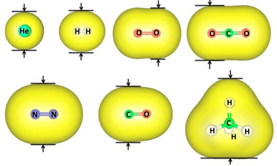
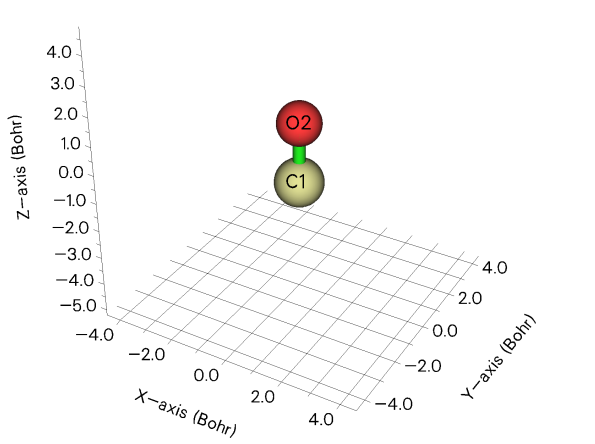
Min-Z: -2.5093 Max-Z: 2.0951 Angstrom
That means the kinetic diameter can be calculated as 1.7528-(-1.7527)=3.505 Å. According to Table 2 of the J. Phys. Chem. A paper, the slope of fitting is 1.025, therefore the final estimated value should be 3.505/1.025=3.42 Å, which is in qualitative agreement with the Breck's value (3.76 Å).
The CO is a very simple case, while for much more complicated molecule, you have to use VMD (http://www.ks.uiuc.edu/Research/vmd/) to measure the distance between two proper surface vertices to estimate the kinetic diameter. Again taking the CO as example, in the post-processing menu, choose option 6 to export vtx.pdb in current folder, which records all surface vertices. Then load this file into VMD, in the "Graphics" - "Representation", set "Drawing method" as "Points". Then in the VMD main window, choose "Display" - "Orthographic". After that, activate the VMD graphical window, press button 2 on your keyboard, then click two vertices at proper positions. From the map below, you can find the distance between the two vertices is 3.47 Å, which is very close to the value 3.505 Å given above.
Choosing proper surface vertices is not quite easy, please be very patient. If the vertices are mis-selected, you can enter "Graphics" - "Labels", then delete the unwanted atoms labels and bond labels.
4.12.13 Using local electron affinity and local electron attachment energy to reveal electrophilic regions¶
Note: See my blog article “Using Multiwfn to investigate preferential site and difficulty of nucleophilic reactions as well as weak interactions through local electron attachment energy (LEAE)” (http://sobereva.com/676, in Chinese) for more discussion and examples about this topic.
We have studied average local ionization energy (\(IE_{L}\)) in Section 4.12.2, please read it first if you have not, since the present section can be viewed as an extension of that section. There are two functions closely related to IEL, namely local electron affinity (EAL) and local electron attachment energy (Eatt), which will be described and illustrated in this section.
Local electron affinity \(IE_{L}\) was proposed in J. Mol. Model., 9, 342 (2003) and defined as
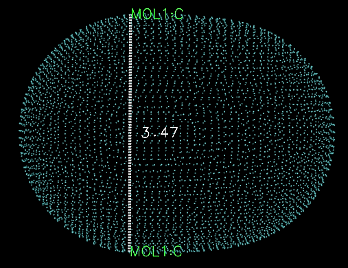
i ∈ vir
where ε denotes orbital energy, φ is orbital wavefunction. \(EA_L\) corresponds to user-defined function 27 in Multiwfn.
\(EA_L\) approximately reveals electron affinity at a given point based on Koopmans' approximation. It is expected that the more positive the EAL at a point, the stronger the electrophilicity in this region. Clearly, this nature makes EAL have certain ability in revealing favorable site of nucleophilic attack.
The best way of exhibiting distribution of \(EA_L\) should be mapping it to molecular surface via different colors. In Section 4.12.2 I have illustrated how to plot \(IE_L\) mapped molecular surface via script of VMD program based on Multiwfn output files, below I will illustrate how to plot this kind of map for EAL via almost the same way.
examples\CH3Cl.fchk will be taken as example, it was generated at B3LYP/6-31G* level. Note that \(EA_L\) is meaningful only when diffuse functions are not employed. In addition, you must use a file containing virtual orbitals as input file, such as .mwfn, .fch and .molden, because virtual orbitals are involved in EAL calculation.
To plot the map, you should do following things (below procedure only works for Windows platform, for Linux platform you should write similar scripts yourself)
-
Copy LEA_isoext.bat and LEA_isoext.txt from "examples\scripts\local_EA" folder to current folder. Edit the .bat file by text editor, set the VMD paths to actual VMD folder on your machine, and set the path of input file for Multiwfn as its actual path, namely examples\CH3Cl.fchk.
-
Copy LEA_isoext.vmd from "examples\scripts\local_EA" folder to VMD folder
- Double click LEA_isoext.bat to run it. Then Multiwfn will be invoked to generate density.cub (cube file of ρ), userfunc.cub (cube file of \(EA_L\)) and surfanalysis.pdb (containing surface extrema of EAL on ρ = 0.01 a.u. isosurface), then they will be automatically moved to VMD folder
Boot up VMD and input source LEA_isoext.vmd in VMD console window to run this script, then you will see the graph below
This map shows \(EA_L\) mapped ρ = 0.01 a.u. isosurface, the color scale is from -0.80 (blue) to -0.30 (red) a.u., cyan spheres correspond to maxima of EAL on this surface. As can be seen, the regions around the hydrogens have most positive EAL, indicating that they are the most electrophilic
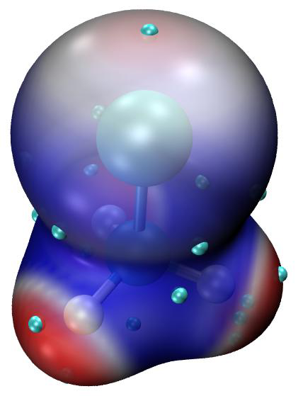
part of the molecule. Presence of these regions comes from the fact that the hydrogens have positive charge. At the end of the Cl atom there is also a region with relatively more positive \(EA_{L}\), which
indicates the existence of σ-hole of the Cl atom.
To inquire exact value of the surface extrema, you should activate OpenGL window of VMD, then click button 0 on your keyboard to enter inquire mode, then click center of a surface extreme, for example, the extreme at the top of the map above, you will find its index on VMD console window (index 9). Then enter [atomselect top "index 9"] get beta in VMD console window, you will find the value is -12.49, which is given in eV, and corresponds to -12.49/27.2114 = -0.46 a.u.
It is worth to note that the most appropriate color scale of \(EA_{L}\) is usually very different from system to system. If you find the entire isosurface is monocolor, or the color in different regions cannot be clearly distinguished, you should properly adjust lower and upper limits of color scale. If you input for example mol scaleminmax 0 1 -1.0 -0.4 in VMD console window, then the color scale will be changed to -1.0 ~ -0.4 a.u.
By the way, in order to fully understand how the script works, you are encouraged to manually input the commands recorded in the LEA_isoext.txt one by one into Multiwfn window.
Local electron attachment energy This function was defined in J. Phys. Chem. A., 120, 10023 (2016) as
where i loops over all unoccupied orbitals with negative energy. For restricted and unrestricted wavefunctions, n equals 2 and 1, respectively. \(E_{\text{att}}\) corresponds to user-defined function -27 in Multiwfn, you can study it via various ways in Multiwfn.
The character of this function is highly analogous to LEA, but mostly because high-lying unoccupied MOs (fully lack of chemical meaning) are not involved in the calculation, this function is more robust than LEA, and presence of diffuse functions are allowed. However, to use this function, one must guarantee that at least LUMO has a negative energy, otherwise the function will be exactly zero everywhere. In the original paper it is found that \(E_{\text{att}}\) works reasonable with B3LYP/6-31+G(d,p) wavefunction. So, we will use the wavefunction generated at this level to illustrate the analysis of Eatt. It is noteworthy that at B3LYP/6-31G* level, even LUMO has a positive energy, thus adding diffuse functions is compulsory at least for this case!
We will plot \(E_{\text{att}}\) colored molecular surface for CH3Cl like the above \(EA_{L}\) example. The molecular surface will be defined as 0.004 a.u., this is because the original paper of Eatt suggests studying Eatt on this surface. You should do following things (under Windows)
-
Copy LEAE_isoext.bat and LEAE_isoext.txt from "examples\scripts\local_EA" folder to current folder. Open the .bat file by text editor, set the VMD paths to actual VMD folder on your machine, and set the path of input file for Multiwfn as its actual path, namely examples\CH3Cl_631+Gxx.fch, which was generated using B3LYP/6-31+G(d,p)//B3LYP/6-31G(d) calculation by Gaussian 16.
-
Copy LEAE_isoext.vmd from "examples\scripts\local_EA" folder to VMD folder.
- Double click LEAE_isoext.bat to run it. Then Multiwfn will be invoked to generate density.cub (cube file of ρ), userfunc.cub (cube file of \(E_{\text{att}}\)) and surfanalysis.pdb (containing surface